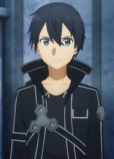

The year is 2022, and gamers have lined up on launch day for Sword Art Online, a hotly-anticipated MMORPG
that lets players connect to an immersive virtual reality world with special helmets called Nerve Gear.
Kirito is one such gamer who's eager to jump back into action, having spent a great deal of time as a beta
tester, and quickly becomes friends with newbie warrior Klein.
But soon, Sword Art Online's 10,000 players discover that not only are they unable to log out, the only way
they can return to their physical bodies is by beating the 100-level tower's final boss - death in the game
means death in the real world.
Now, with no one else to turn to, Kirito and the other participants must survive the game as best they can.
This on one of my personal favorite animes due to its amazing and interesting story. This anime bring to
lite the question of just how far could we take computers and what happens when they are used for the wrong
rreasons.
This anime has a great amount of funa and interesting character but centers around Kazuto kirigaya (Kirito)
& Asuna Yuuki (Asuna) and their journey to escape the death game that they had been trapped in.
This anime starts off strong getting right to the point and having everyone watching just in shock asking if
that really happened (atlest thats how I felt). From great story to building on the technology that is
introduced in the anime,
the story continues to bring neew concepts and concerns to real life issues when it come to technology and
how we as humans decide to use and abuse technology.
It was a great original concept when it first came out and I belive that it has elevated the video game
Isekai genre to its current popularity. This anime is a good starting anime as it deals with adult concepts
without the vulgar art work that easily could
be animated in to make this anime more adult. I give this a 8.75 out of 10 and hope that the new seaons and
movies will continue to impress.

Kirito (Kazuto Kirigaya)
Kirito is the protagonist of Sword Art Online. He is a "solo" player, a player who hasn't joined a guild and
usually
works alone. He is also one of the very few people to have had the privilege to play in the beta testing period
of Sword
Art Online. His game alias, Kirito, is created by taking the syllables of the first and last Kanji of his real
last and
first names respectively: (Kirigaya Kazuto). In the real world, he lives with his aunt and younger cousin in a
family of
3. When Kayaba announced the start of the death game, he is surprised, but unlike everyone else, he quickly gets
over it
and accepts it to an extent. He invited his friend Klein to go with him but Klein had to find his friends in the
game.
He was invited to join them but he declined as he couldn't take the pressure of protecting them even with his
beta
testing knowledge of the game.Kirito tends to use a single handed straight sword. The blade that he uses most
often is the Elucidator.
Later on, he acquires a second blade called Dark Repulser that was made by his blacksmith friend, Lisbeth.

Asuna (Asuna Yuki)
Asuna is a friend of Kirito and is a sub-leader of the guild Knights of the Blood (KoB), a medium-sized guild of
about
thirty players, also called the strongest guild in Aincrad. Being one of the few girls that are in SAO, and even
more so
that she's extremely pretty, she receives many invitations and proposals. She is a skilled player earning the
title
"Flash" for her extraordinary sword skill that is lightning fast. Her game alias is the same as her real world
name.
Klein (Ryoutarou Tsuboi)
A friendly player that meets Kirito at the start of the game and quickly befriends and learns from him. He and
Kirito
later separate because he has friends who were also new to the game so he couldn't leave them. He survives for
the past
two years and managed to protect his friends the whole time, something Kirito regretted not doing. He is a
katana user
and the leader of the small guild Fuurinkazan who participates in the boss battles. As one of the few people
close to
Kirito, he always keeps him in check and wants Kirito to survive the game.